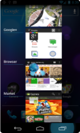
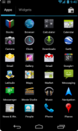
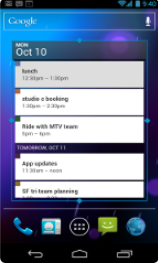
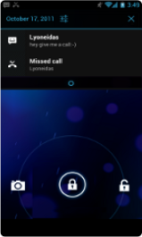
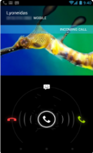

Android 4.0.4 Platform Highlights
Welcome to Android 4.0.4!
Android 4.0.4 delivers a refined, unified UI for phones and tablets and introduces innovative features for users and developers. This document provides a glimpse of the many new features and technologies that make Android 4.0.4 simple, beautiful, and beyond smart.
Android 4.0.4 for Users
Simple, beautiful, beyond smart
Android 4.0.4 builds on the things people love most about Android — easy multitasking, rich notifications, customizable home screens, resizable widgets, and deep interactivity — and adds powerful new ways of communicating and sharing.
Refined, evolved UI
Focused on bringing the power of Android to the surface, Android 4.0.4 makes common actions more visible and lets users navigate with simple, intuitive gestures. Refined animations and feedback throughout the system make interactions engaging and interesting. An entirely new typeface optimized for high-resolution screens improves readability and brings a polished, modern feel to the user interface.
Virtual buttons in the System Bar let users navigate instantly to Back, Home, and Recent Apps. The System Bar and virtual buttons are present across all apps, but can be dimmed by applications for full-screen viewing. Users can access each application’s contextual options in the Action Bar, displayed at the top (and sometimes also at the bottom) of the screen.
Multitasking is a key strength of Android and it’s made even easier and more visual on Android 4.0.4. The Recent Apps button lets users jump instantly from one task to another using the list in the System Bar. The list pops up to show thumbnail images of apps used recently — tapping a thumbnail switches to the app.

The Recent Apps list makes multitasking simple.
Rich and interactive notifications let users keep in constant touch with incoming messages, play music tracks, see real-time updates from apps, and much more. On smaller-screen devices, notifications appear at the top of the screen, while on larger-screen devices they appear in the System Bar.


The All Apps launcher (left) and resizable widgets (right) give you apps and rich content from the home screen.
Home screen folders and favorites tray
New home screen folders offer a new way for users to group their apps and shortcuts logically, just by dragging one onto another. From the All Apps launcher, users can now simply drag an app to get information about it or immediately uninstall it, or disable a pre-installed app.
On smaller-screen devices, the home screen now includes a customizable favorites tray visible from all home screens. Users can drag apps, shortcuts, folders, and other priority items in or out of the favorites tray for instant access from any home screen.
Resizable widgets
Home screens in Android 4.0.4 are designed to be content-rich and customizable. Users can do much more than add shortcuts — they can embed live application content directly through interactive widgets. Widgets let users check email, flip through a calendar, play music, check social streams, and more — right from the home screen, without having to launch apps. Widgets are resizable, so users can expand them to show more content or shrink them to save space.

Jump to the camera or see notifications without unlocking.
New lock screen actions
The lock screens now let users do more without unlocking. From the slide lock screen, users can jump directly to the camera for a picture or pull down the notifications window to check for messages. When listening to music, users can even manage music tracks and see album art.
Quick responses for incoming calls
When an incoming call arrives, users can now quickly respond by text message, without needing to pick up the call or unlock the device. On the incoming call screen, users simply slide a control to see a list of text responses and then tap to send and end the call. Users can add their own responses and manage the list from the Settings app.

Quick responses for incoming calls.
Swipe to dismiss notifications, tasks, and browser tabs
Android 4.0.4 makes managing notifications, recent apps, and browser tabs even easier. Users can now dismiss individual notifications, apps from the Recent Apps list, and browser tabs with a simple swipe of a finger.
Creamy Launcher recreates this interface on Android 16. See the launcher or download it.